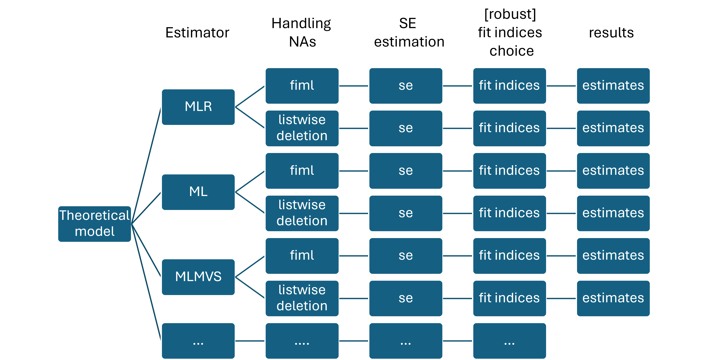
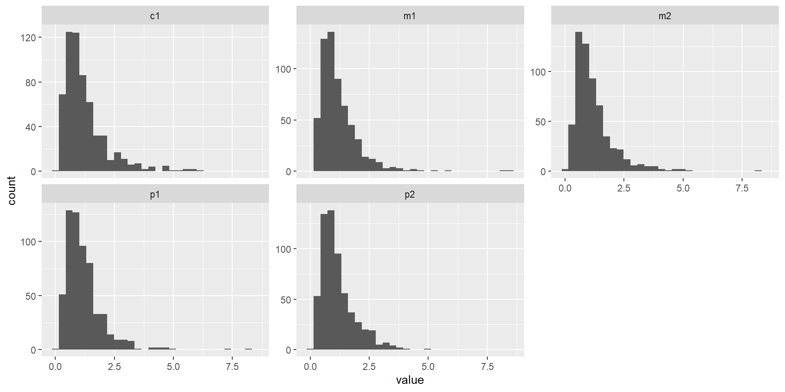
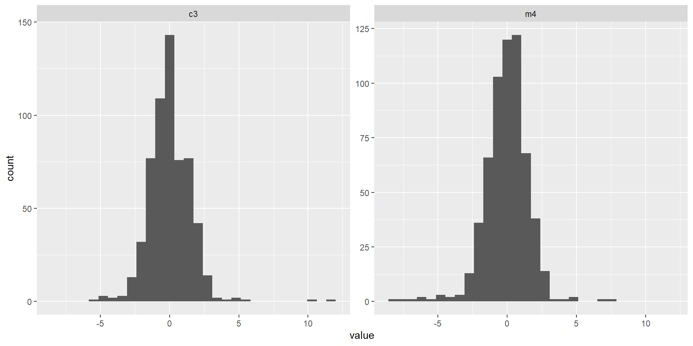

Robustness, Missing Data, and Reporting in SEM
Specify → Identify → Estimate → Evaluate → Revise/Report
Today we practice a sensitivity mindset: Same model, different reasonable choices → does the conclusion change?
By the end of today you can:

Real SEM work is rarely “clean”:
We simulate this so we can see what changes and what doesn’t.
A simple measurement-first SEM:
We “Likert-ify” some indicators by applying a monotone transform (skewness).

We inject a small number of outliers in two indicators (a common real-life pattern).

Missingness depends on an observed variable (MAR), not on the missing value itself.
We make e1 and m3 more likely to be missing when peer pressure is high.
set.seed(1234)
# a proxy observed score for peer (in real life: a sum score, previous wave, etc.)
peer_obs <- rowMeans(dat[, c("p1","p2","p3","p4")])
p_miss <- plogis(scale(peer_obs)) # 0..1
miss <- runif(N) < (p_miss * 0.45) # tune to ~20%
dat$e1[miss] <- NA
dat$m3[miss] <- NA
round(colMeans(is.na(dat)), 3) p1 p2 p3 p4 m1 m2 m3 m4 c1 c2 c3 e1 e2
0.0 0.0 0.0 0.0 0.0 0.0 0.2 0.0 0.0 0.0 0.0 0.2 0.0 | Mechanism | Full Name | Definition | Key Idea |
|---|---|---|---|
| MCAR | Missing Completely at Random | Missingness is independent of both observed and unobserved data | No systematic pattern in missing data |
| MAR | Missing at Random | Missingness depends only on observed data, not on the missing values | Can be explained by variables you have |
| MNAR | Missing Not at Random | Missingness depends on the unobserved (missing) values themselves | Missingness is related to what is missing |
We track the same hypotheses in every fit:
Key point:
FIML is not “imputation”. It’s likelihood-based estimation using all available cases assuming MAR.
lhs op rhs est se z pvalue
listwise.14 comp ~ peer 0.387 0.103 3.767 0
listwise.15 comp ~ media 0.381 0.087 4.392 0
listwise.16 eat ~ comp 0.444 0.126 3.521 0
fiml.14 comp ~ peer 0.434 0.091 4.788 0
fiml.15 comp ~ media 0.404 0.081 4.959 0
fiml.16 eat ~ comp 0.444 0.126 3.526 0Interpretation rule of thumb
If your substantive conclusion changes under a reasonable alternative (e.g., listwise → FIML), treat the result as fragile and investigate why.
MLR (robust ML) typically:
Use case:
fit_mlr <- sem(model_sem, data = dat,
missing = "fiml",
estimator = "MLR")
fitMeasures(fit_mlr, c("nobs","chisq","df","cfi","tli","rmsea","srmr")) chisq df cfi tli rmsea srmr
57.675 61.000 1.000 1.006 0.000 0.027 Or better use robust indices
lhs op rhs est se z pvalue
fiml_ML.14 comp ~ peer 0.434 0.091 4.788 0.000
fiml_ML.15 comp ~ media 0.404 0.081 4.959 0.000
fiml_ML.16 eat ~ comp 0.444 0.126 3.526 0.000
fiml_MLR.14 comp ~ peer 0.434 0.094 4.643 0.000
fiml_MLR.15 comp ~ media 0.404 0.139 2.914 0.004
fiml_MLR.16 eat ~ comp 0.444 0.132 3.357 0.001Pitfall
Don’t mix-and-match reporting: - If you estimate MLR, report robust fit statistics (scaled χ², robust RMSEA/CFI/TLI). - Don’t copy/paste the ML χ² from another run.
Indirect effects are products of coefficients:
\(ab = a \times b\)
Even if \((a)\) and \((b)\) are roughly normal, \((ab)\) is often skewed → normal-theory CIs can be misleading.
For live demos keep bootstrap modest (e.g., 300–800).
For papers, use ~2000+.
pe_norm <- parameterEstimates(fit_fiml, ci = TRUE)
pe_boot <- parameterEstimates(fit_boot, ci = TRUE, boot.ci.type = "perc")
sel <- function(pe) {
pe[pe$op == "~" & pe$lhs %in% c("comp","eat") &
pe$rhs %in% c("peer","media","comp"),
c("lhs","op","rhs","est","ci.lower","ci.upper")]
}
list(normal_CI = sel(pe_norm),
boot_CI = sel(pe_boot))$normal_CI
lhs op rhs est ci.lower ci.upper
14 comp ~ peer 0.434 0.256 0.612
15 comp ~ media 0.404 0.244 0.564
16 eat ~ comp 0.444 0.197 0.691
$boot_CI
lhs op rhs est ci.lower ci.upper
14 comp ~ peer 0.434 0.259 0.633
15 comp ~ media 0.404 0.210 0.743
16 eat ~ comp 0.444 0.199 0.729Decision heuristic
Bootstrap is most valuable when:
Global fit indices summarize average discrepancy:
But:
Good global fit does not guarantee good measurement or correct structure.
p1 p2 p3 p4 m1 m2
p1 0.000 0.023 -0.030 -0.011 -0.052 0.022
p2 0.023 0.000 0.008 -0.010 0.008 0.046
p3 -0.030 0.008 0.000 0.021 -0.006 0.016
p4 -0.011 -0.010 0.021 0.000 0.036 -0.017
m1 -0.052 0.008 -0.006 0.036 0.000 0.006
m2 0.022 0.046 0.016 -0.017 0.006 0.000 lhs op rhs mi epc
132 p4 ~~ e2 4.784 0.118
56 peer =~ c1 3.903 -0.244
142 m2 ~~ m4 3.872 -0.127
84 eat =~ m1 3.653 0.122
109 p2 ~~ c1 3.631 -0.043
134 m1 ~~ m3 3.494 -0.094
147 m2 ~~ e2 3.436 -0.069
94 p1 ~~ m1 3.122 -0.043
125 p4 ~~ m2 2.829 -0.060
96 p1 ~~ m3 2.437 -0.057Only consider modifications that are:
Pitfall: “MI shopping”
If you add correlated errors because they “fix RMSEA”, you can end up fitting noise.
The SEM was estimated in
lavaanusing robust maximum likelihood (MLR) with FIML for missing data under a MAR assumption. Model fit was evaluated using the scaled χ² test and robust fit indices (CFI, TLI, RMSEA with 90% CI, SRMR). Key parameters were interpreted based on standardized estimates and robust standard errors. Where relevant, confidence intervals were obtained via bootstrap percentile CIs (B = 500 for teaching; ≥ 2000 for publication).
For any important claim, ask:
If not, don’t panic—learn what the data are telling you.
In the lab you will: